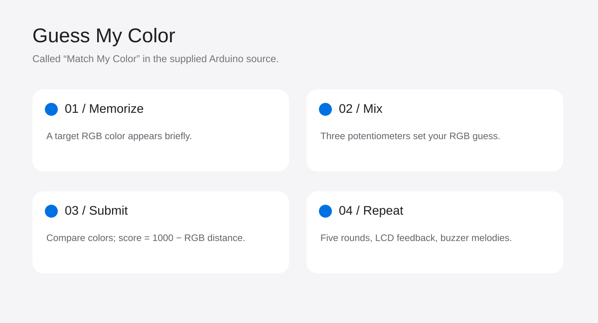

Guess My Color
Arduino color-memory game · Wokwi / PlatformIO
View project on GitHub ↗- Context
- Hardware simulation project
- Project status
- Arduino game implementation
- Tools & methods
- Arduino · PlatformIO · Wokwi · C++

Remember, mix, compare
The player memorizes a random target color, recreates it with red, green, and blue potentiometers, and presses a button to submit. Two RGB LEDs show the target and the player’s mix; a 16 × 2 I²C LCD shows timing and scores.
Implementation
A five-state loop controls welcome, target display, guessing, results, and game-over screens. Five rounds progressively shorten the memorization window; hard mode halves timing. Input debouncing and buzzer feedback support interaction.
The scoring function subtracts the sum of absolute RGB-channel differences from 1,000. It is a simple channel-distance score, not a perceptual color metric.
From the source
int calculateScore()
{
int distance = abs((int)targetR - (int)guessR) + abs((int)targetG - (int)guessG) + abs((int)targetB - (int)guessB);
return MAX_SCORE_PER_RND - distance;
}